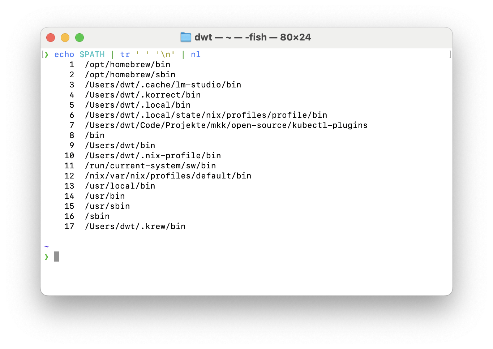

Diese fünf kleinen Tools sind echte Arbeitspferde für jeden, der mit Text auf der Kommandozeile arbeitet. Sie haben viele Optionen – aber man braucht nicht alles zu kennen. Schon mit ein paar Grundbefehlen kann man 80 % der typischen Aufgaben lösen.
1. grep – Zeilen finden
grep filtert Textzeilen anhand von Mustern. Praktisch, wenn man in langen Outputs schnell das Relevante sehen will.
| Aufgabe | Befehl | Beispiel | |
|---|---|---|---|
| Textzeilen ausgeben, die ein Wort enthalten | grep PATTERN |
`cat protokoll.txt | grep "Fehler"` |
| Zeilen ausschließen | grep -v PATTERN |
grep -v "^#" protokoll.txt |
|
| In einem ganzen Projektbaum nach | grep -r PATTERN DIR |
grep -r "TODO" src/ |
Tipps
-iignoriert Groß/Kleinschreibung-eaktiviert Reguläre Ausdrücke (unter linux gibt es noch-Pfür Perl-kompatible Regex)
Kombinationen über Pipes machen grep besonders stark:
grep -r -P "def \w*\(" . --after-context 30 | grep "foo" | grep -v "bar"
Für große Projekte lohnt sich ripgrep (rg), weil es schneller ist, .gitignore respektiert und reguläre Ausdrücke standardmäßig aktiviert.
2. cut – Spalten und Zeichen
cut schneidet Spalten oder Zeichen aus Textzeilen heraus. Funktioniert am besten, wenn der Trenner ein einzelnes Zeichen ist.
| Aufgabe | Befehl | Beispiel |
|---|---|---|
| Spalte 2 eine CSV 1 | -d ',' -f 2 |
cut -d ',' -f 2 daten.csv |
| Zeichen 5‑10 einer Zeile | -c 5-10 |
cut -c 5-10 string.txt |
| Mehrere Felder | -f 1,3,5 |
cut -d ';' -f 1,3,5 daten.txt |
Bei Whitespace-getrennten Daten stößt cut an Grenzen – da ist awk besser.
3. awk – Felder und Muster
awk versteht Texte als Felder, getrennt durch Whitespace oder ein angegebenes Zeichen. Wenn man möchte, kann man mit awk Text-Dateien fast wie Datenbanken abfragen, aber für den Anfang:
| Aufgabe | Befehl | Beispiel |
|---|---|---|
| Spalten ausgeben | {print $1, $3} |
awk '{print $1, $3}' daten.txt |
| Letzte Spalte ausgeben | {print $NF} |
awk '{print $NF}' daten.txt |
| Summe einer Spalte | {s+=$2} END {print s} |
awk '{s+=$2} END {print s}' zahlen.txt |
Nützliche Variablen
NF= Anzahl Felder in der ZeileNR= aktuelle Zeilennummer
4. sed – Suchen und Ersetzen
sed ist ein Stream-Editor: ideal für Ersetzungen und einfache Transformationen.
| Aufgabe | Befehl | Beispiel |
|---|---|---|
| Ersetzen | s/alt/neu/g |
sed 's/Fehler/Warning/g' log.txt |
Vorsicht: Nie direkt in die gleiche Datei schreiben mit > – sonst überschreibst du sie, bevor sie gelesen wurde. DAMIT HABE ICH SCHON DATEN VERLOREN Stattdessen:
sed -i 's/alt/neu/g' datei.txt # Direkt in der Datei ändern
5. tr – Zeichen übersetzen
| Aufgabe | Befehl | Beispiel |
|---|---|---|
| Groß→Klein | tr [:upper:][:lower:] |
tr '[:upper:]' '[:lower:]' < input.txt |
| Leerzeichen löschen | tr -d ' ' |
tr -d ' ' < file |
| ROT13 (Caesar‑Shift) | tr 'a-z' 'n-za-m' |
tr 'a-z' 'n-za-m' < text.txt |
| Mehrere Zeichen gleichzeitig | tr 'abc' 'ABC' |
tr 'abc' 'ABC' < input.txt |
Beispiel: $PATH lesbarer machen:
❯ echo $PATH | tr ':' '\n' | nl
Fazit
grep: Zeilen nach Mustern filterncut: Spalten oder Zeichen ausschneiden.awk: Felder flexibel verarbeiten und berechnen.sed: Ersetzen und transformierentr: Zeichen umwandeln oder löschen
👉 Zusammengeschaltet mit Pipes (|) werden diese Tools zu einem Schweizer Taschenmesser für Textbearbeitung – schnell, skriptbar und überall verfügbar.
CSV = Comma-Separated Values, kann natürlich auch maskierte Kommas in dem Wert enthalten, was dieser Befehl geflissentlich ignoriert oder falsch macht. Verwendet zum CSV-Parsen also bitte nicht diesen Shell-Befehl. Dieser Befehle sind dafür da, auf der Shell schnell mal in eine Datei hineinzuschauen. Wenn das Ergebnis gut genug ist, kann man es auch weiter verarbeiten.↩